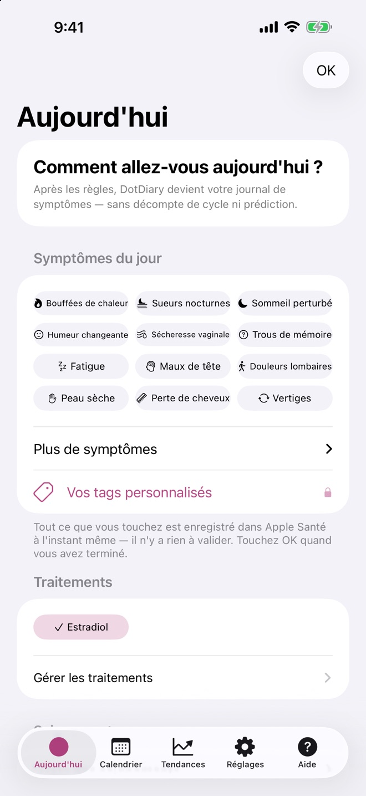
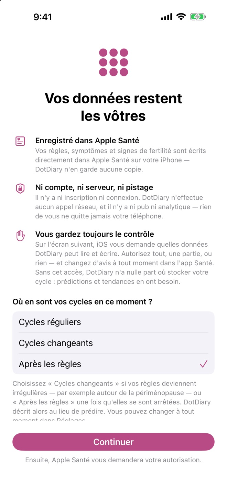
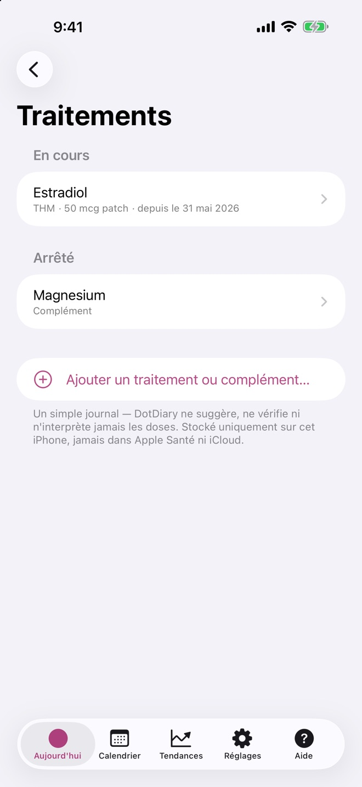
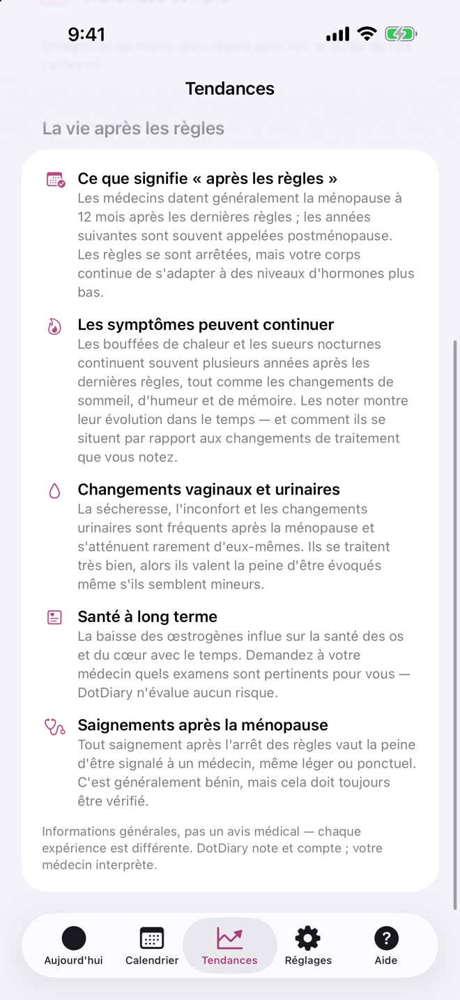

Notez bouffées de chaleur, sueurs nocturnes, sommeil, humeur et THM en quelques touches. Vos données restent sur votre iPhone, dans Apple Santé. Sans compte, sans pistage, sans abonnement.
Pour iPhone et iPad, en français. Gratuit · DotDiary Pro est un achat unique.

La plupart des applis supposent un cycle stable et prévisible, et deviennent inutiles quand il ne l'est plus. DotDiary change sa façon de fonctionner quand votre corps change. C'est vous qui choisissez l'étape : l'app ne la devine jamais.
Saisie des règles en deux touches, un calendrier, et des estimations des prochaines règles avec un niveau de confiance honnête. Elles s'élargissent quand vos cycles varient au lieu de disparaître.
Quand les règles deviennent irrégulières, DotDiary arrête de prédire et se met à décrire : jours depuis vos dernières règles, plage de vos cycles récents et symptômes mois par mois. Bouffées de chaleur et sueurs nocturnes en premier.
Aujourd'hui devient un journal de symptômes : ni compteur de cycle, ni prédiction. Vous pouvez toujours noter des saignements, et DotDiary rappelle qu'ils valent la peine d'être signalés à un médecin.

Indiquez une fois où vous en êtes. Une bouffée de chaleur arrive sans prévenir : la noter prend quelques secondes.

Vous commencez un THM ou changez de dose ? Notez-le une fois, puis comparez vos symptômes avant et après.
Les doses sont écrites avec vos propres mots. DotDiary ne les suggère, ne les vérifie ni ne les interprète jamais.

Chaque étape s'accompagne d'un guide court et simple : ce qui est courant, et ce qui mérite d'en parler à votre médecin.
Des outils rapides et discrets, sans rien à créer.
Votre historique Santé apparaît dès le premier jour, et tout ce que vous notez y retourne.
Verrouillage Face ID, icônes neutres, écran leurre en option, et des widgets qui ne disent jamais « règles ».
Historique de la durée des cycles, symptômes par phase et graphiques mensuels.
Importez un export CSV et DotDiary l'écrit dans votre propre Apple Santé.
CSV avec symptômes, tags et traitements. Vos données vous appartiennent, emportez-les.
Sur iPhone, iPad et iPhone Duo, en français et en anglais. L'app suit la langue de votre téléphone, ou choisissez-la dans Réglages.
Les applis de ménopause coûtent généralement 40 à 80 € par an et exigent un compte. DotDiary est différent par conception.
| DotDiary | Appli de ménopause typique | |
|---|---|---|
| Prix | Gratuit · Pro en achat unique | Abonnement de 40 à 80 € par an |
| Compte | Aucun | Obligatoire |
| Où sont stockées vos données | Apple Santé, sur votre appareil | Les serveurs de l'entreprise |
| Pub & analytique | Aucune, jamais | Souvent des SDK tiers |
| Rapport pour le médecin | Créé sur l'appareil, hors ligne | Généré sur un serveur, s'il existe |
| Étape de ménopause | C'est vous qui la choisissez | Souvent « évaluée » par un algorithme |
DotDiary n'a aucun serveur et n'effectue aucun appel réseau. Règles et symptômes vont dans Apple Santé ; notes, tags et journal de traitements restent dans l'app, sur votre appareil. Notre étiquette de confidentialité App Store indique « Données non collectées », parce que rien ne l'est.
Non. C'est aussi un suivi de règles complet pour les cycles réguliers. Les étapes Cycles irréguliers et Après les règles sont là quand vous en avez besoin, et vous pouvez changer à tout moment dans Réglages.
Non, volontairement. Seul un médecin peut vous le dire. DotDiary enregistre et compte ce que vous notez, et le présente clairement pour faciliter la discussion avec votre médecin.
La saisie, le calendrier, les trois étapes, les widgets et le journal de traitements sont gratuits. DotDiary Pro, un achat unique, ajoute le graphique mensuel des symptômes avec les changements de traitement, les récurrences des symptômes, le PDF pour le médecin, les tags personnalisés, le partage avec un partenaire et la sauvegarde iCloud des notes.
Règles, symptômes et signes de fertilité : dans Apple Santé, sur votre appareil. Notes, tags et traitements : dans des fichiers protégés dans DotDiary, sur votre appareil. Rien ne nous est envoyé. Nous n'avons aucun serveur.
Oui. DotDiary suit automatiquement la langue de votre iPhone, et vous pouvez choisir le français ou l'anglais dans Réglages → Langue.
Non. DotDiary est un journal. Les estimations sont données à titre indicatif et ne doivent pas servir à la contraception ni à la planification d'une grossesse ; rien dans l'app ne constitue un avis médical.
Une question, une idée ou un bug ? Écrivez-nous (en français ou en anglais). Indiquez votre version de l'app (visible dans Réglages) ; nous n'avons jamais besoin de votre journal.